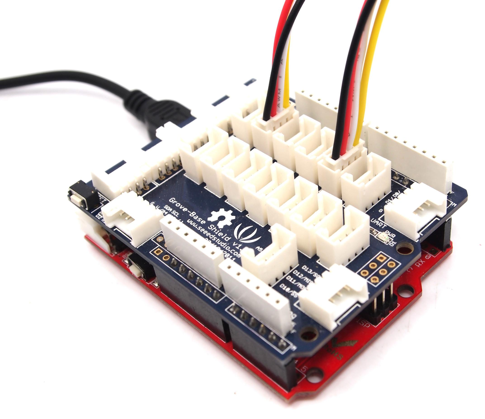
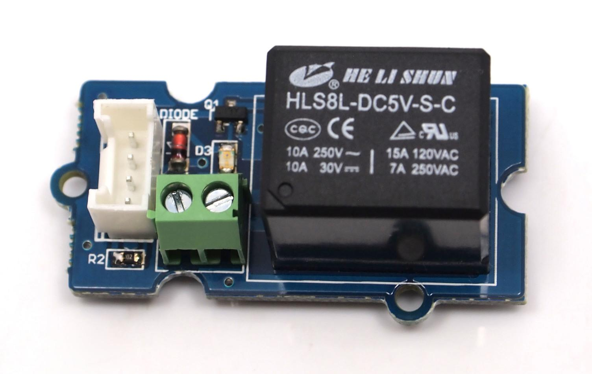

The Grove system is a modular, safe and easy to use group of items that allow you to minimise the effort required to get started with microcontroller-based experimentation and learning. Although there are many choices available for microcontroller development environments, the Grove system will work very well with the Arduino system.
The Grove Starter Bundle consists of the following items, as pictured below:

Now let's look at each component in more detail. First we start with the Grove base shield board. This is very similar in fashion to an Arduino shield board, and it is compatible with Seeeduino v2.21 (168p and 328p), and Arduino UNO and Duemilanove.. Here is a top-down view:
The purpose of the Grove base shield is to allow easy connection of any microprocessor input and output pins to the Grove units. Each socket is clearly labelled with its matching I/O pin. For a more detailed examination of the Grove , please refer to the following diagram:

For those working with Seeeduino or Arduino boards, the layout should be quite familiar. The labels on the "Power" header pins may be confusing - the new Arduino UNO has two ground pins between the Vin and 5v, and label "GND" twice, but the Base Shield labels match the Duemilanove which label "GND" once, wider, to indicate both pins.
There is one small thing to take note of when to connect to analog or digital sockets. Each socket contains 5V, GND, and two I/O pin connections:

When using the digital I/O, note the staggered alignment of the pins – that is, one socket handles D1 and D2, the next D2 and D3, and so on. If you are going to use an input Grove and an output Grove which have two signal pins simultaneously (e.g. LED and button ), separate your wires so that a socket is between them like this:

Wires for two signal Grove units cannot sit side-by-side on the Base Shield because one pin (such as D2) will be multi-using. Or, if two Groves only use one digital pin, such as the tilt-switch and the piezo, they can sit together on the board as they only use one of the digital lines in the connecting wire and therefore will not interfere with each other. It is the same as the Analog I/O sockets. Make sure you know the silkscreen of each socket before you start wiring.
Each "Grove" is a peripheral board that connects to the GROVE System Base shield with a consistent 4-wire connectorised cable. The connector leads are Ground, Vcc, D2, and D1, where the D1 and D2 leads may be digital or analog input or output, depending on the equipment on the Grove units. The same format also supports I2C (IIC) signalling, and several of the Base shield connectors are tied to Analog pins 4 and 5 to support it for future I2C-based Groves.
Most of the Groves use a 2cm x 2cm format, looking like jigsaw puzzle pieces which fit together with tabs, and bring the Ground and Vcc out to the corners and the D1 and D2 out to each side.
(Request for description from the designer - the pieces don't actually snap together, so I can't tell if there's any way to use the connectors on the edges. Are they meant to connect to header pins on a metric-spaced breadboard? Are they meant to connect I2C Groves together, or are there other reasons to connect non-I2C Groves like that?)
A circuit diagram would look really nice here.
Next, let's examine each of our Grove, and then use each on in an example Arduino sketch that we can use with our Seeeduino boards...
The button Grove contains two independent buttons, which are configured with pull-down resistors – ready for use with our microcontrollers as digital inputs. The red button signals the D1 wire, and the green button signals the D2 wire. (What's the resistance of the pull-downs? They're surface-mount, so too small for me to read.)
The tilt switch Grove is the equivalent of a button, and is used as a digital input. When the switch is level it will open, and when tilted, the switch will close. It is wired to the D1 line,and D2 is not used on this Grove. There's a surface-mount resistor (pull-down? pull-up? What resistance?)
The LED Grove consists of two LEDs, D1 being red and D2 being green. They both operate from 5V DC and draw 3 milliamps of current. Perfect for use on Seeeduino digital outputs, or also can be controlled by using pulse-width modulation. Each LED has a current-limiting resistor, which protects the LED and the Arduino from high current. (They're surface-mount, so they're too small for me to read the resistance - is there a diagram?)
The potentiometer Grove produces analog output between 0 and Vcc (5V DC with Seeeduino) on its D1 connector. The D2 connector is not used. The angular range is 300 degrees with a linear change in value. The resistance value is 10k ohms, perfect for Arduino use. This may also be known as a “rotary angle sensor”.
The temperature sensor Grove uses a thermistor which returns the ambient temperature in the form of a resistance value, which is then used to alter Vcc (5V with our Seeeduinos). Our board then converts this voltage value measured by an analog input pin to a temperature. The operating range is -40 to 125 degrees Celsius, with an accuracy of ±1.5ºC.
As the temperature increases, the resistance value of the sensor decreases:

Although the calculation of the actual temperature can seem quite complex, it is simple to execute. For an example of how this is done, please refer to project seven described later in this guide.
This is a simple yet enjoyable Grove to use. The piezo can be connected to digital outputs, and will emit a tone when the output is high. Alternatively it can be connected to an analog pulse-width modulation output to generate various tones and effects.

The relay Grove is a digital normally-open switch that controls a relay capable of switching much higher voltages and currents than your normal Seeeduino boards. When set to HIGH the LED will light, and the relay will close allowing current to flow. The peak voltage capability is 250V at 10 amps.
Please exercise great care when working with mains voltages – if you are in doubt, please contact a professional such as a licensed electrician for help.
This consists of two parts, a module holding an eight character by two line LCD, and the Grove itself. The LCD has an interface that is easily used under the Arduino IDE using the special Seeedstudio liquidCrystal library.
Before using your LCD Grove, download the library from here.
Then extract the “LiquidCrystal” folder and copy it into your Arduino libaries folder, usually located at ..\Arduino-xx\libraries.
For a detailed example on how to use your LCD Module , please see project six described later on in this guide.
This Grove allows you to add your own circuitry or components to your Grove system prototypes. This allows you access to all four lines from the connector cable – D1, D2, 5V and GND. There is also an extra normally-open button to take advantage of. The hole spacing makes using normal DIP-format ICs and other components very simple. You may wish to purchase more for future use in advance.
Now you should be familiar with your Base Shield and Grove Units, so let's examine them in more detail with the following projects:
They are written for use with the Arduino environment. All of the following projects can be made with only a Seeeduino board and the Grove starter bundle. If you have not already done so, download and install the latest version of the Arduino IDE from: http://arduino.cc/en/Main/Software.
Furthermore, if you are using a Seeeduino] or Seeeduino Mega, make sure you have the switches set to 5V and auto, as such:

This ensures the board running at 5V DC from the USB cable, and that the board will auto-reset upon uploading your sketch. Otherwise you will have to manually reset your Seeeduino before the sketch starts operation.
By now we hope you have enjoyed experimenting with your Seeeduino and the Grove starter bundle. You will find it simple and convenient to use this system to develop your ideas and prototypes. For technical support please email info@seeedi.com.
In the meanwhile, don't forget to regularly check the Seeedstudio Bazaar website for new Grove Units and other interesting and useful products at: http://seeedstudio.com/depot/
For more question and suggestions, please list them here:
If you have questions or other better design ideas, you can go to our forum or wish to discuss.
| Revision | Descriptions | Release Date |
|---|---|---|
| GROVE Starter Bundle v1.0b | draft | Dec 31, 2010 |
There is no bug found until now. Have you found? Please write them here, we want to know what you have to say!
What do you think of our GROVE System and GROVE - Starter Bundle? Don't forget that we always welcome your views on our goods and services so that we can continue to meet all your stock requirements. You can write them here or go to Seeedstudio's Wish page.
the Electronic Brick Cookbook v1.1
Click here to buy GROVE - Starter Bundle ,or other products you like.
Other related products and resources.
This documentation is licensed under the Creative Commons Attribution-ShareAlike License 3.0 Source code and libraries are licensed under GPL/LGPL, see source code files for details.
Links to external webpages which provide more application ideas, documents/datasheet or software libraries.
Copyright (c) 2008-2016 Seeed Development Limited (www.seeedstudio.com / www.seeed.cc)